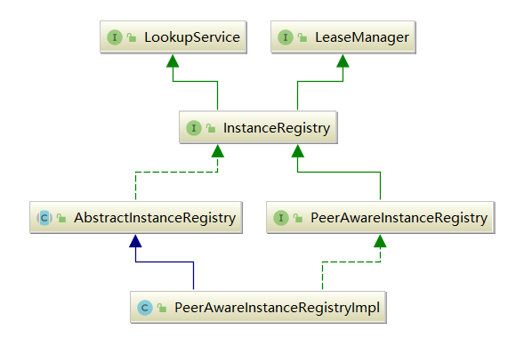

我们继续看Eureka-Server的启动流程，在完成了EurekaClient的构造和初始化后，EurekaBootStrap还会创建一个PeerAwareInstanceRegistry对象：
PeerAwareInstanceRegistry registry;
if (isAws(applicationInfoManager.getInfo())) {
// 忽略AWS相关...
} else {
registry = new PeerAwareInstanceRegistryImpl(
eurekaServerConfig,
eurekaClient.getEurekaClientConfig(),
serverCodecs,
eurekaClient
);
}
本章，我就来讲解PeerAwareInstanceRegistry到底是个什么东西？
PeerAwareInstanceRegistry，看名字就知道是一个注册表。因为Eureka集群之间是通过一种P2P方式来交换信息的，所以当前应用实例就需要一个注册表，用来保存集群中与自己通信的其它应用实例的信息：
public interface PeerAwareInstanceRegistry extends InstanceRegistry {
// 根据Eureka集群信息，初始化注册表
void init(PeerEurekaNodes peerEurekaNodes) throws Exception;
// 与集群中的相邻节点进行注册表信息同步
int syncUp();
// 是否允许其它region区域的集群访问
boolean shouldAllowAccess(boolean remoteRegionRequired);
// 注册指定的应用实例信息
void register(InstanceInfo info, boolean isReplication);
//...
}
PeerAwareInstanceRegistry是一个接口，它的具体实现是PeerAwareInstanceRegistryImpl：

我们重点看下InstanceRegistry，它主要提供Eureka-Server端的应用实例相关功能：
public interface InstanceRegistry extends LeaseManager<InstanceInfo>, LookupService<String> {
// ====== 开启与关闭相关 ======
void openForTraffic(ApplicationInfoManager applicationInfoManager, int count);
void shutdown();
void clearRegistry();
// ====== 应用实例状态变更相关 ======
void storeOverriddenStatusIfRequired(String appName, String id, InstanceStatus overriddenStatus);
boolean statusUpdate(String appName, String id, InstanceStatus newStatus,
String lastDirtyTimestamp, boolean isReplication);
boolean deleteStatusOverride(String appName, String id, InstanceStatus newStatus,
String lastDirtyTimestamp, boolean isReplication);
Map<String, InstanceStatus> overriddenInstanceStatusesSnapshot();
// ====== 响应缓存相关 ======
void initializedResponseCache();
ResponseCache getResponseCache();
// ====== 自我保护模式相关 ======
long getNumOfRenewsInLastMin();
int getNumOfRenewsPerMinThreshold();
int isBelowRenewThresold();
boolean isSelfPreservationModeEnabled();
public boolean isLeaseExpirationEnabled();
// ====== 调试/监控相关 ======
List<Pair<Long, String>> getLastNRegisteredInstances();
List<Pair<Long, String>> getLastNCanceledInstances();
}
从类的继承关系，我们可以看出来，PeerAwareInstanceRegistry其实就是额外提供了Eureka-Server集群内的应用注册信息同步服务。
PeerAwareInstanceRegistry是一个接口，它的实现类是PeerAwareInstanceRegistryImpl：
public PeerAwareInstanceRegistryImpl(
EurekaServerConfig serverConfig,
EurekaClientConfig clientConfig,
ServerCodecs serverCodecs,
EurekaClient eurekaClient) {
// 调用父类构造器
super(serverConfig, clientConfig, serverCodecs);
// 设置各种属性
this.eurekaClient = eurekaClient;
this.numberOfReplicationsLastMin = new MeasuredRate(1000 * 60 * 1);
// We first check if the instance is STARTING or DOWN, then we check explicit overrides,
// then we check the status of a potentially existing lease.
this.instanceStatusOverrideRule = new FirstMatchWinsCompositeRule(new DownOrStartingRule(),
new OverrideExistsRule(overriddenInstanceStatusMap), new LeaseExistsRule());
}
上述代码的核心是调用父类AbstractInstanceRegistry的构造器进行实例化：
protected AbstractInstanceRegistry(EurekaServerConfig serverConfig, EurekaClientConfig clientConfig, ServerCodecs serverCodecs) {
// 设置各种属性
this.serverConfig = serverConfig;
this.clientConfig = clientConfig;
this.serverCodecs = serverCodecs;
// 最近下线的应用实例队列
this.recentCanceledQueue = new CircularQueue<Pair<Long, String>>(1000);
// 最近注册的应用实例队列
this.recentRegisteredQueue = new CircularQueue<Pair<Long, String>>(1000);
this.renewsLastMin = new MeasuredRate(1000 * 60 * 1);
// 开启一个定时任务，进行注册信息的增量同步
this.deltaRetentionTimer.schedule(getDeltaRetentionTask(),
serverConfig.getDeltaRetentionTimerIntervalInMs(),
serverConfig.getDeltaRetentionTimerIntervalInMs());
}
PeerAwareInstanceRegistry的核心其实就是它的init初始化方法（具体是在EurekaBootStrap中调用，我这里先介绍下）：
public void init(PeerEurekaNodes peerEurekaNodes) throws Exception {
// 定时调度一个副本感知任务
this.numberOfReplicationsLastMin.start();
this.peerEurekaNodes = peerEurekaNodes;
// 初始化响应缓存
initializedResponseCache();
// 定时调度心跳阈值更新任务
scheduleRenewalThresholdUpdateTask();
// 初始化Region注册表
initRemoteRegionRegistry();
try {
// 配合 Netflix Servo 实现监控信息采集
Monitors.registerObject(this);
} catch (Throwable e) {
logger.warn("Cannot register the JMX monitor for the InstanceRegistry :", e);
}
}
上述方法的开启了一些定时任务，用于本地注册表的信息与其它节点的注册表信息进行同步等操作，后续章节会详细讲解。
EurekaServerContext服务上下文构造并初始化完成后，EurekaBootStrap会执行最后一步操作：
// Copy registry from neighboring eureka node
int registryCount = registry.syncUp();
registry.openForTraffic(applicationInfoManager, registryCount);
上述PeerAwareInstanceRegistry#syncUp，会从集群的一个 Eureka-Server 节点获取初始注册信息。
syncUp的核心逻辑就是从相邻的一个eureka server节点拷贝注册表信息，如果拷贝失败，就继续找下一个：
public int syncUp() {
// Copy entire entry from neighboring DS node
int count = 0;
for (int i = 0; ((i < serverConfig.getRegistrySyncRetries()) && (count == 0)); i++) {
// 未获取到应用实例，则sleep 等待，默认5min
if (i > 0) {
try {
Thread.sleep(serverConfig.getRegistrySyncRetryWaitMs());
} catch (InterruptedException e) {
logger.warn("Interrupted during registry transfer..");
break;
}
}
// 遍历已注册的所有应用信息
Applications apps = eurekaClient.getApplications();
for (Application app : apps.getRegisteredApplications()) {
// 对于每一个应用，遍历它所有的实例
for (InstanceInfo instance : app.getInstances()) {
try {
// 对于非AWS部署应用，都返回 true
if (isRegisterable(instance)) {
// 注册该应用实例到自身节点
register(instance, instance.getLeaseInfo().getDurationInSecs(), true);
count++;
}
} catch (Throwable t) {
logger.error("During DS init copy", t);
}
}
}
}
return count;
}
我们再来看下register方法，其实就是将registrant这个应用实例（InstanceInfo）中的信息更新到PeerAwareInstanceRegistry内部的一个注册表结构中：
/**
* AbstractInstanceRegistry.java
*
* @param registrant 应用实例
* @param leaseDuration 租约过期时间
* @param isReplication true-集群复制 false-Client注册
*/
public void register(InstanceInfo registrant, int leaseDuration, boolean isReplication) {
try {
// 获取读锁
read.lock();
Map<String, Lease<InstanceInfo>> gMap = registry.get(registrant.getAppName());
// 增加注册次数到监控（配合 Netflix Servo 实现监控信息采集）
REGISTER.increment(isReplication);
// 获得应用实例对应的租约
if (gMap == null) {
final ConcurrentHashMap<String, Lease<InstanceInfo>> gNewMap = new ConcurrentHashMap<String, Lease<InstanceInfo>>();
gMap = registry.putIfAbsent(registrant.getAppName(), gNewMap);
if (gMap == null) {
gMap = gNewMap;
}
}
Lease<InstanceInfo> existingLease = gMap.get(registrant.getId());
// Retain the last dirty timestamp without overwriting it, if there is already a lease
if (existingLease != null && (existingLease.getHolder() != null)) {
Long existingLastDirtyTimestamp = existingLease.getHolder().getLastDirtyTimestamp();
Long registrationLastDirtyTimestamp = registrant.getLastDirtyTimestamp();
logger.debug("Existing lease found (existing={}, provided={}", existingLastDirtyTimestamp, registrationLastDirtyTimestamp);
// this is a > instead of a >= because if the timestamps are equal, we still take the remote transmitted
// InstanceInfo instead of the server local copy.
if (existingLastDirtyTimestamp > registrationLastDirtyTimestamp) {
logger.warn("There is an existing lease and the existing lease's dirty timestamp {} is greater" +
" than the one that is being registered {}", existingLastDirtyTimestamp, registrationLastDirtyTimestamp);
logger.warn("Using the existing instanceInfo instead of the new instanceInfo as the registrant");
registrant = existingLease.getHolder();
}
} else {
// The lease does not exist and hence it is a new registration
synchronized (lock) {
if (this.expectedNumberOfRenewsPerMin > 0) {
// Since the client wants to cancel it, reduce the threshold
// (1
// for 30 seconds, 2 for a minute)
this.expectedNumberOfRenewsPerMin = this.expectedNumberOfRenewsPerMin + 2;
this.numberOfRenewsPerMinThreshold =
(int) (this.expectedNumberOfRenewsPerMin * serverConfig.getRenewalPercentThreshold());
}
}
logger.debug("No previous lease information found; it is new registration");
}
// 创建租约
Lease<InstanceInfo> lease = new Lease<InstanceInfo>(registrant, leaseDuration);
if (existingLease != null) {
lease.setServiceUpTimestamp(existingLease.getServiceUpTimestamp());
}
// 添加到内部注册表
gMap.put(registrant.getId(), lease);
// 添加到最近注册的调试队列
synchronized (recentRegisteredQueue) {
recentRegisteredQueue.add(new Pair<Long, String>(
System.currentTimeMillis(),
registrant.getAppName() + "(" + registrant.getId() + ")"));
}
// 添加到应用实例覆盖状态映射（Eureka-Server 初始化使用）
if (!InstanceStatus.UNKNOWN.equals(registrant.getOverriddenStatus())) {
logger.debug("Found overridden status {} for instance {}. Checking to see if needs to be add to the "
+ "overrides", registrant.getOverriddenStatus(), registrant.getId());
if (!overriddenInstanceStatusMap.containsKey(registrant.getId())) {
logger.info("Not found overridden id {} and hence adding it", registrant.getId());
overriddenInstanceStatusMap.put(registrant.getId(), registrant.getOverriddenStatus());
}
}
// 获得应用实例最终状态，并设置应用实例的状态
InstanceStatus overriddenStatusFromMap = overriddenInstanceStatusMap.get(registrant.getId());
if (overriddenStatusFromMap != null) {
logger.info("Storing overridden status {} from map", overriddenStatusFromMap);
registrant.setOverriddenStatus(overriddenStatusFromMap);
}
// Set the status based on the overridden status rules
InstanceStatus overriddenInstanceStatus = getOverriddenInstanceStatus(registrant, existingLease, isReplication);
registrant.setStatusWithoutDirty(overriddenInstanceStatus);
// 设置租约的开始服务时间戳（只有第一次有效）
// If the lease is registered with UP status, set lease service up timestamp
if (InstanceStatus.UP.equals(registrant.getStatus())) {
lease.serviceUp();
}
// 设置应用实例信息的操作类型为“添加”
registrant.setActionType(ActionType.ADDED);
// 添加到最近租约变更记录队列
recentlyChangedQueue.add(new RecentlyChangedItem(lease));
// 设置租约的最后更新时间戳
registrant.setLastUpdatedTimestamp();
// 过期响应缓存
invalidateCache(registrant.getAppName(), registrant.getVIPAddress(), registrant.getSecureVipAddress());
logger.info("Registered instance {}/{} with status {} (replication={})",
registrant.getAppName(), registrant.getId(), registrant.getStatus(), isReplication);
} finally {
read.unlock();
}
}
这个注册操作定义在AbstractInstanceRegistry中，它的内部有一个ConcurrentHashMap，其实就是真正的注册表：
public abstract class AbstractInstanceRegistry implements InstanceRegistry {
private final ConcurrentHashMap<String, Map<String, Lease<InstanceInfo>>> registry
= new ConcurrentHashMap<String, Map<String, Lease<InstanceInfo>>>();
}
本章，我介绍了Eureka启动过程中的PeerAwareInstanceRegistry对象，它其实就是一个注册表，额外提供了保存集群中其它的server节点的服务实例信息的功能。
另外，PeerAwareInstanceRegistry会进行集群间注册表信息同步的逻辑，看不懂没有关系，我们现在只要了解大体流程即可，后续我详细分析服务注册、心跳等机制时，会深入分析每一个组件。